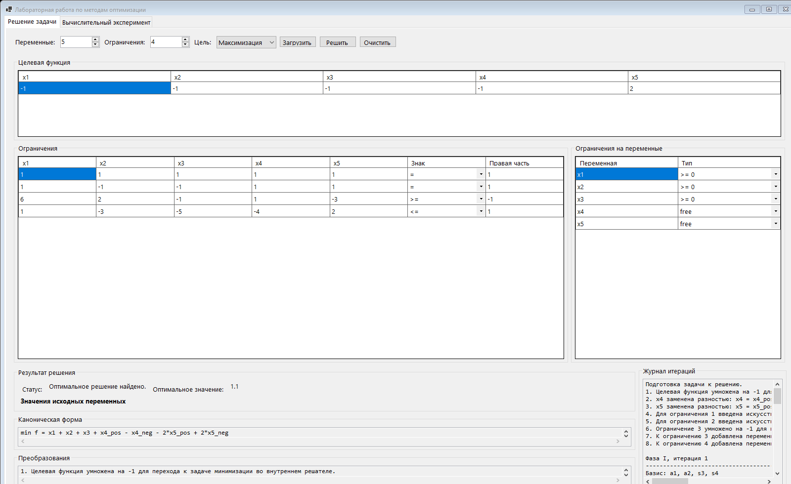
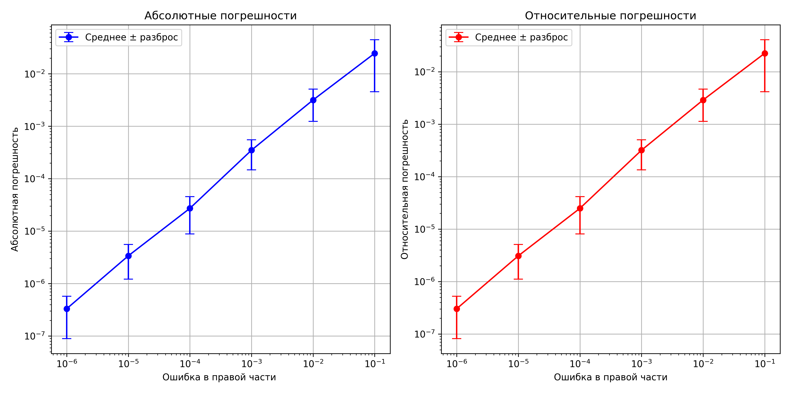

| Преподаватель: | Родионова Елена Александровна |
| Студенты гр. 5030102/20101: | Бугайцев Михаил Владимирович Муалимова Валентина Муратовна Комаров Егор Вячеславович |
| Дата: | 22 марта 2026 г. |
Целью лабораторной работы является исследование решения задачи линейного программирования симплекс-методом, а также анализ влияния возмущений правых частей ограничений на устойчивость найденного оптимального решения. Дополнительно в работе требовалось перенести вычислительную часть на язык C# и создать интерактивный пользовательский интерфейс, позволяющий выполнять расчёты без ручного редактирования исходного кода.
Для проверки программы используется следующая задача линейного программирования:
Исходная задача содержит одновременно равенства, неравенства двух типов и свободные переменные. Поэтому для её решения необходимо выполнить приведение к каноническому виду: заменить свободные переменные разностью двух неотрицательных переменных, ввести переменные запаса или избытка и при необходимости использовать искусственный базис.
В разработанном приложении используется двухфазный симплекс-метод. На первой фазе строится вспомогательная задача с искусственными переменными и находится допустимое базисное решение. На второй фазе выполняется переход к исходной целевой функции и продолжается поиск оптимума.
Алгоритм работы программы включает следующие шаги:
Новая версия лабораторной работы реализована как настольное приложение на платформе .NET 9 с использованием Windows Forms. Вычислительная часть и графический интерфейс разделены на отдельные модули, что упрощает сопровождение и делает структуру проекта прозрачной.
| Файл | Назначение |
|---|---|
OptimizationModels.cs |
Описание задачи линейного программирования, результатов решения и параметров вычислительного эксперимента. |
SimplexSolver.cs |
Приведение задачи к каноническому виду, реализация двухфазного симплекс-метода и формирование журнала итераций. |
SensitivityExperimentRunner.cs |
Автоматический запуск серии экспериментов с возмущением правых частей ограничений и расчёт статистик ошибок. |
Form1.cs |
Построение интерактивного интерфейса, ввод данных, отображение решения, канонической формы, преобразований и графиков. |
Program.cs |
Запуск приложения и служебные режимы, в том числе автоматическое сохранение скриншота интерфейса. |
Главное окно программы состоит из двух вкладок. Первая вкладка предназначена для постановки и решения задачи, а вторая — для проведения вычислительного эксперимента и анализа устойчивости. Пользователь может выбирать число переменных и ограничений, редактировать коэффициенты прямо в таблицах, задавать тип каждого ограничения и тип каждой переменной.

После нажатия кнопки «Решить задачу» интерфейс показывает:
Вкладка вычислительного эксперимента позволяет задать число прогонов, диапазон величины возмущения и начальное значение генератора случайных чисел. После завершения расчёта в приложении отображаются сводная таблица и графики средних абсолютных и относительных ошибок.
Для тестовой задачи приложение находит следующее оптимальное решение:
| Переменная | Оптимальное значение |
|---|---|
| x1 | 4/25 = 0.16 |
| x2 | 0 |
| x3 | 0 |
| x4 | 7/50 = 0.14 |
| x5 | 7/10 = 0.70 |
Оптимальное значение целевой функции равно:
Полученный результат совпадает с ожидаемым для рассматриваемого примера. Кроме итогового ответа, программа выводит каноническую постановку задачи и журнал итераций, что позволяет использовать её не только как вычислительный инструмент, но и как учебное средство для анализа работы метода.
Для анализа устойчивости решения вектора правых частей ограничений подвергались случайным возмущениям. Эксперимент проводился для нескольких диапазонов ошибок, а для каждого диапазона задача решалась многократно. Далее вычислялись средние абсолютные и относительные погрешности по значению целевой функции.

Из графиков видно, что при уменьшении величины возмущения правых частей ограничений уменьшаются и абсолютные, и относительные ошибки. Следовательно, исследуемая задача демонстрирует ожидаемое поведение: точность решения напрямую зависит от точности входных данных.
В новой версии лабораторной работы этот эксперимент может быть выполнен непосредственно из интерфейса приложения, без отдельного запуска внешних скриптов. Это делает проверку устойчивости решения более наглядной и удобной.
В ходе выполнения лабораторной работы была решена задача линейного программирования симплекс-методом и исследована чувствительность решения к возмущениям правых частей ограничений. Дополнительно исходная программная реализация была перенесена на язык C#, а поверх вычислительного ядра создан интерактивный пользовательский интерфейс.
Разработанное приложение позволяет:
Итогом работы является не только вычислительный модуль, но и полноценный учебный инструмент, который объединяет постановку задачи, решение и анализ результатов в едином интерфейсе.